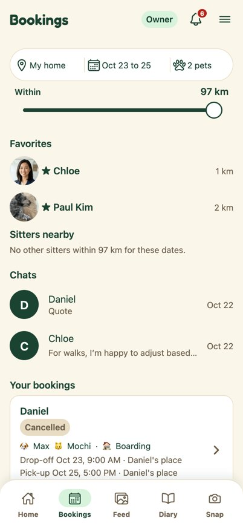
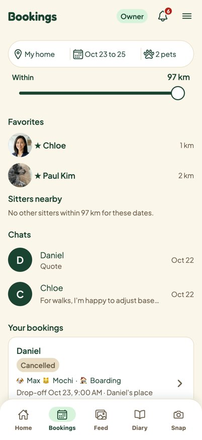
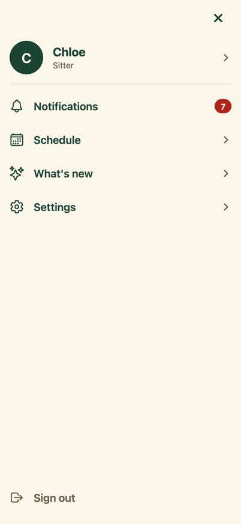
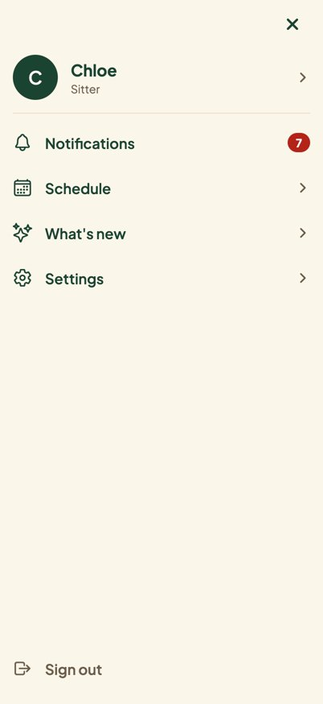
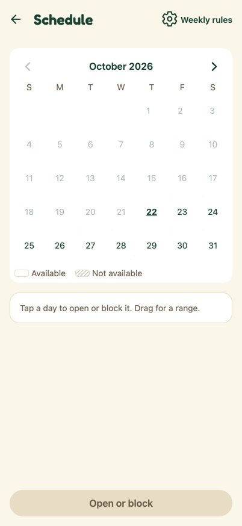
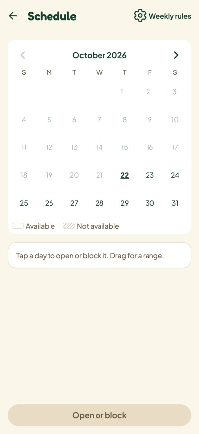
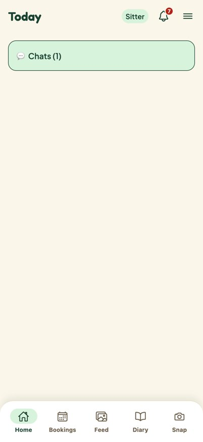

Fredoka for titles, Plus Jakarta Sans for everything else제목은 Fredoka, 나머지는 Plus Jakarta Sans
Figma's Expressive parts already use this pair. The app showed the system font for body text; with #304 it matches Figma. Titles were Fredoka already and stay so.피그마 Expressive 파트는 이미 이 조합. 앱 본문은 시스템 글꼴이었는데 #304로 피그마와 같아져요. 제목은 원래 Fredoka 그대로.
The pair조합
Body text: today vs Jakarta본문: 지금 vs Jakarta
Jakarta is rounder and a touch wider, closer to Fredoka's warmth, so titles and body read as one family. Numbers keep even widths.Jakarta는 더 둥글고 살짝 넓어서 Fredoka와 한 가족처럼 읽혀요. 숫자 폭도 고르게.
Where each one goes어디에 쓰나
The app, before and after앱 전후 비교
Same build, only the font changes: left with the Jakarta files blocked (today's system font), right with them.같은 빌드, 글꼴만 다름: 왼쪽은 Jakarta 파일을 막은 것(지금 시스템 글꼴), 오른쪽은 적용.







Nothing wraps or clips. Jakarta lines are about a pixel taller, so long lists move down slightly.줄바꿈이나 잘림 없음. Jakarta 줄이 1px 정도 높아서 긴 목록이 약간 내려가요.